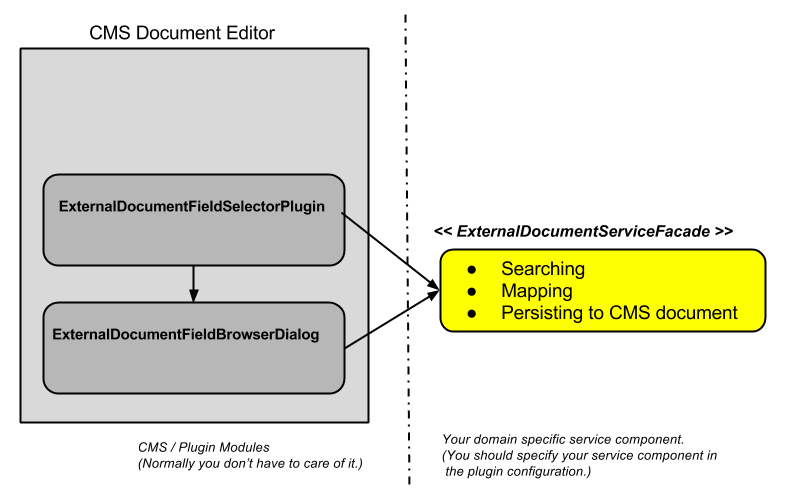
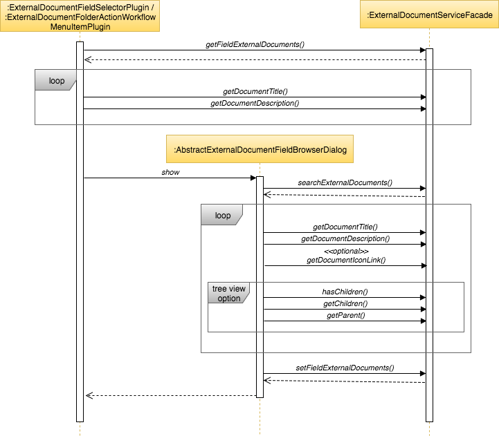

Overview
In Hippo CMS authoring application, the External Document Picker Base for Field Picker
plugin and External Picker Folder Context Menu plugins are installed.
Then you can configure field(s) in document template bootstrap files (a.k.a Hippo CMS 'namespace'),
or you can configure folder workflow configurations for a custom folder context menu item.
So, when you are editing a document or working on a folder in CMS authoring application,
you will see those being displayed by this plugin.
Each document field or folder workflow must be configured with a custom domain-specific
ExternalSearchServiceFacade implementation class name.
This plugin component instantiates your ExternalSearchServiceFacade class and invokes it like the following:
-
First of all, an ExternalSearchServiceFacade instance is in the same lifecycle of this plugin.
In case External Document Picker Base for Field Picker is used,
whenever a document (of the configured namespace) is opened or edited, the plugin will be instantiated.
In case External Picker Folder Context Menu is used,
whenever the folder context menu is pulled down on a folder (of the configured folder workflow type),
the plugin will be instantiated.
And the plugin will instantiate an ExternalSearchServiceFacade instance.
When the document is closed, this plugin and the ExternalSearchServiceFacade instance will be destroyed.
-
When the plugin is instantiated, the plugin invokes the ExternalSearchServiceFacade instance to retrieve
the currently-selected domain-specific external documents from the currently-viewed/edited CMS document or the selected folder node in the context.
-
When the plugin needs to display the linked external documents (e.g, title),
it invokes the ExternalSearchServiceFacade with the current document context.
The ExternalSearchServiceFacade should give a proper title or description string values for your domain-specific document object to the plugin.
-
The ExternalSearchServiceFacade instance is invoked from the External Document Field Browser Dialog in order to
search domain-specific external documents and display document information such as title, description and icon in the dialog.
-
The dialog iterates the searched external document items to show the result in either
the default Flat List View or Tree List View table
by reading title, description and optionally icon image link from each external document item.
-
When a user selects single or multiple items in the table view and clicks on the OK button,
the dialog saves the selections by invoking ExternalDocumentServiceFacade#setFieldExternalDocuments() method.
Here's an overal architectural view. As you can see, you can care of only your custom ExternalDocumentServiceFacade
implementation class with simple configurations for a specific document field without having to spend
much effort on CMS Document Editor UI customization by yourself.

Here's a sequence diagram showing the interactions:

See Javadocs for detail about the ExternalSearchServiceFacade.